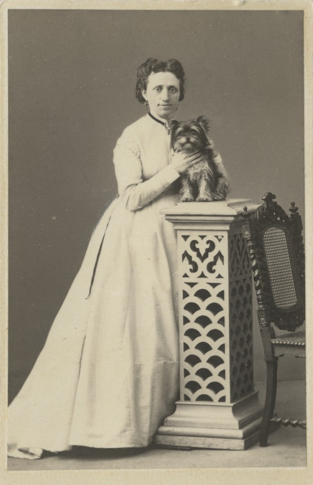

Mõtlesin, et teen sellise veebirakenduse, kus saab enda sugupuid ilusaks teha
Jeanne von Wrangell sülekoeraga Rahvusarhiiv
Genealoogia kui teadusharu kasvas välja 19. sajandil varasemast ükiksuguvõsade uurimisest. Oma päritolu teadmine aitas keskajal ja hiliskeskajal reguleerida õigus-varanduslikke suhteid. Kuulumine teatud sugulusrühma andis teatud privileege (seisusi). Arhailises ühiskonnas oli oma päritolu tundmine otseses seoses usundilise maailmavaatega, eriti esivanemate kultusega. Alates pärisnimede panemisest levis genealoogiliste andmete kogumine ka lihtrahva hulgas.